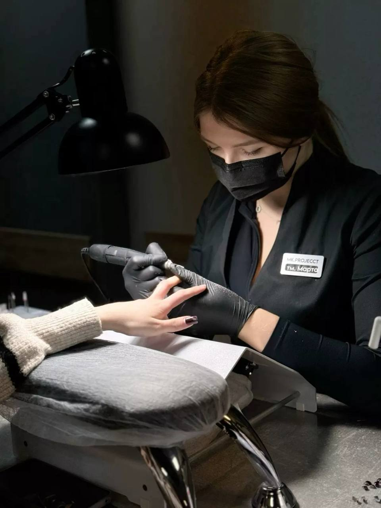
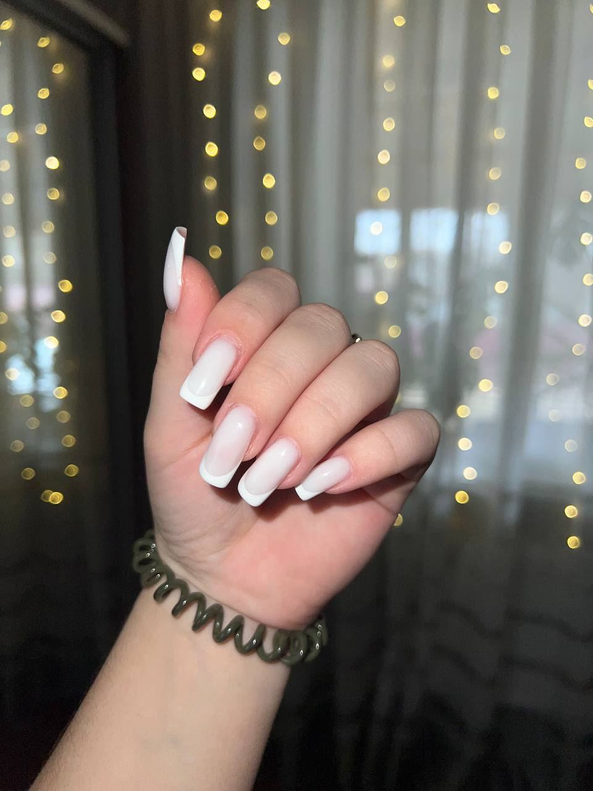
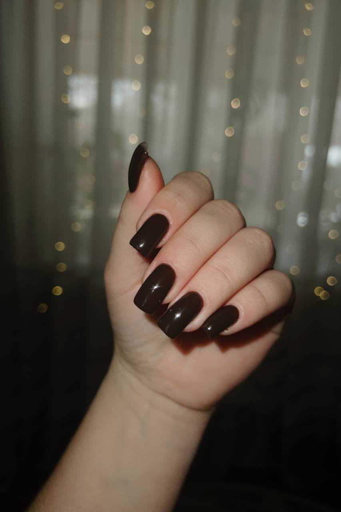
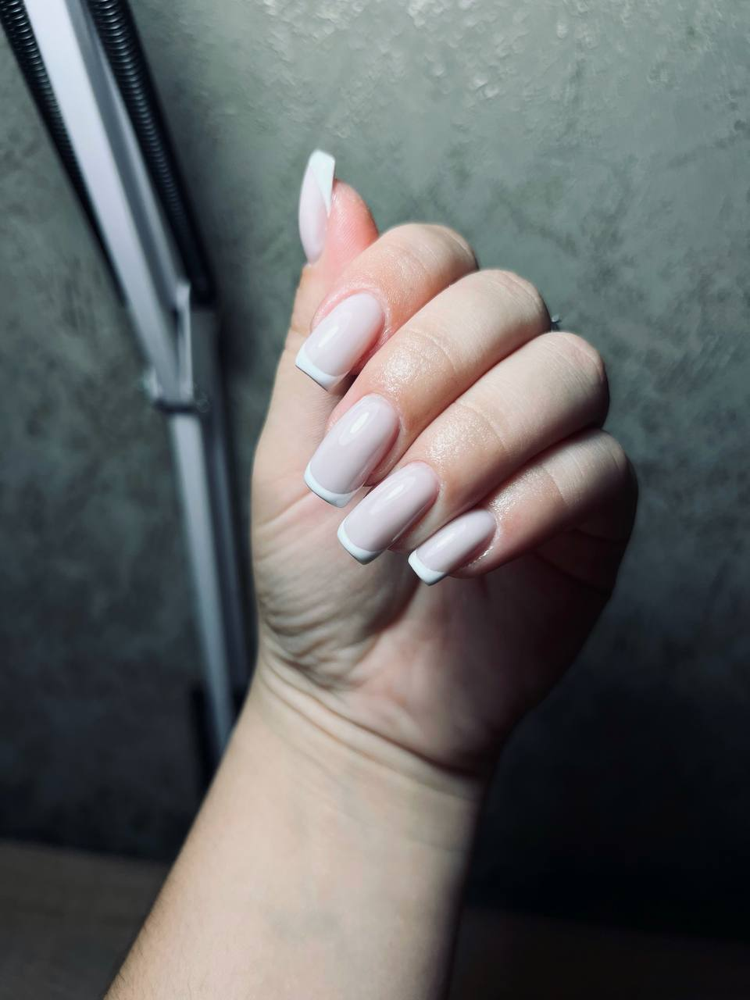
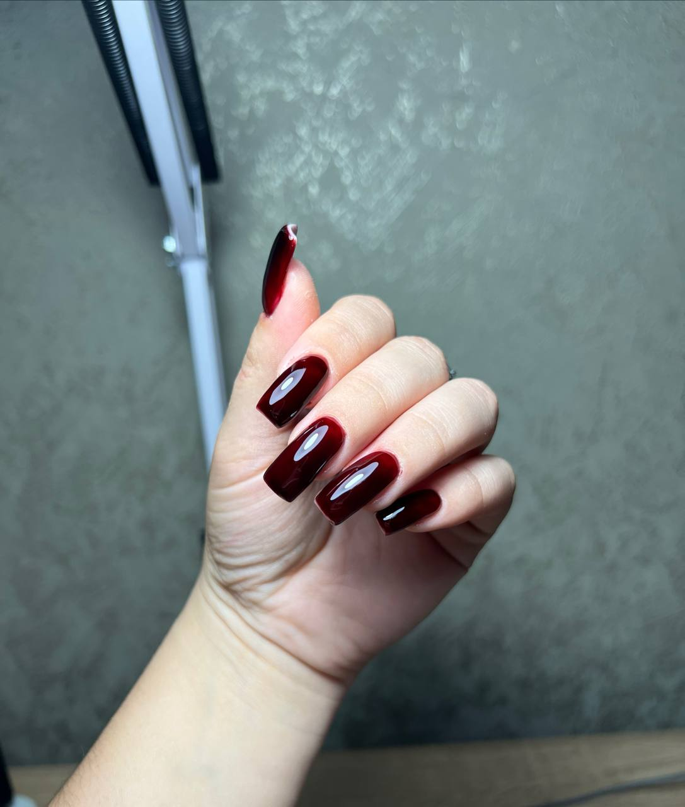
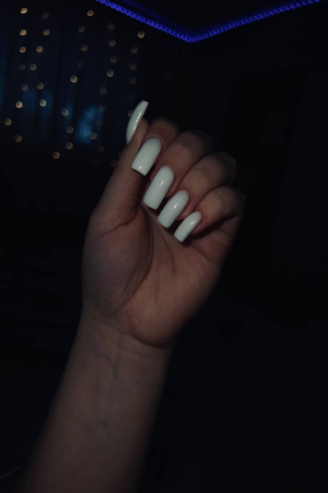

Чорна класика
Стильний та елегантний однотонний манікюр, який завжди виглядає ефектно!
Тут ви можете ознайомитися з моїми роботами, дізнатися більше про мій підхід до роботи та обрати дизайн, який підкреслить вашу індивідуальність.
Дивитись роботи
Мене звати Дарія, і я обожнюю робити ваші ручки доглянутими та красивими. Для мене манікюр — це не просто рутина, а справжнє мистецтво. Я постійно вдосконалюю свої навички, стежу за новими трендами та дбаю про те, щоб кожен візит до мене був максимально комфортним, безпечним і приносив вам радість.
У своїй роботі я використовую лише якісні матеріали преміумкласу та сучасні техніки.
Стильний та елегантний однотонний манікюр, який завжди виглядає ефектно!

Ніжний та витончений французький манікюр на довгих нігтях квадратної форми з білими кінчиками. Вічна класика!

Елегантний однотонний манікюр насиченого шоколадного кольору з глянцевим фінішем на довгих нігтях квадратної форми. Виглядає глибоко та вишукано.

Акуратний французький манікюр на довгих нігтях квадратної форми. Виглядає дуже природно, акуратно та доглянуто.

Елегантний однотонний манікюр глибокого вишневого кольору з глянцевим фінішем на довгих нігтях квадратної форми.

Елегантний однотонний манікюр білого кольору з глянцевим фінішем на довгих нігтях квадратної форми. Виглядає стильно та свіжо.
Якщо у вас є запитання або ви хочете обговорити проєкт, ви можете зв'язатися зі мною будь-яким зручним способом: